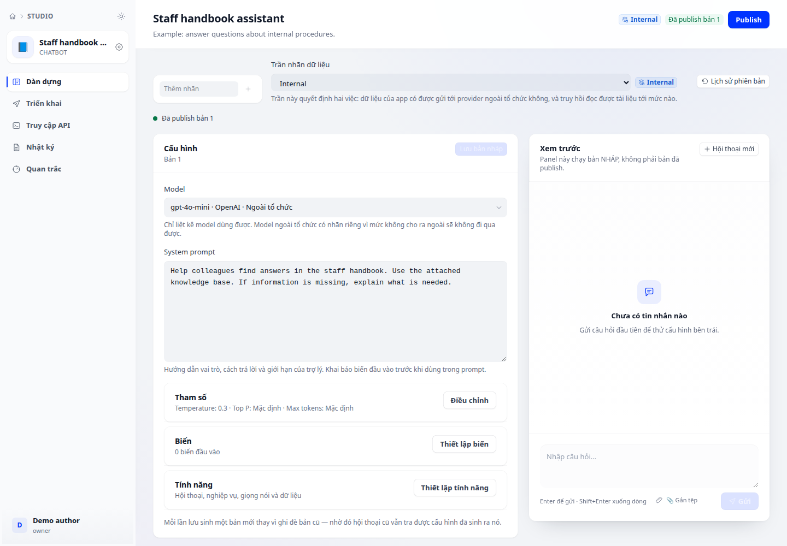

Lịch sử và khôi phục phiên bản
Lấy lại cấu hình cũ vào bản nháp mà vẫn kiểm soát việc xuất bản.
Màn hình thao tác
Lấy lại cấu hình cũ vào bản nháp mà vẫn kiểm soát việc xuất bản.

Thực hiện từng bước
- Mở lịch sử phiên bản trong trình chỉnh sửa ứng dụng. Đối chiếu số phiên bản, mô hình và nhãn Bản nháp/Đã xuất bản.
- Lưu hoặc ghi lại thay đổi chưa lưu trước khi chọn Khôi phục ở phiên bản mong muốn.
- Đọc phần xem lại trong hộp xác nhận rồi khôi phục vào bản nháp. Mở lại cấu hình và so sánh các trường quan trọng.
- Chạy bộ câu hỏi kiểm thử. Chỉ xuất bản lại khi đã xác nhận hành vi cần khôi phục.
Kết quả cần thấy
Bản nháp chứa cấu hình đã chọn; người dùng cuối chỉ nhận thay đổi sau bước xuất bản phù hợp.
Khi chưa được như mong muốn
Khôi phục không thay thế việc kiểm thử. Nếu có thay đổi chưa lưu, kiểm tra cảnh báo để tránh ghi đè nhầm.